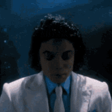
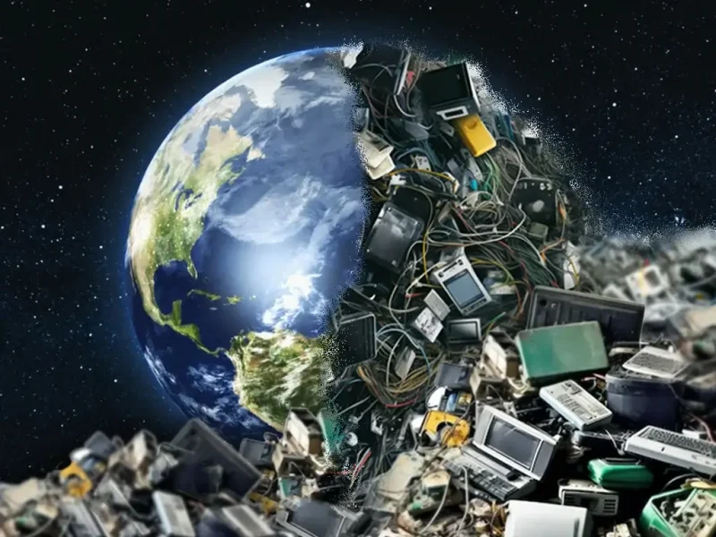
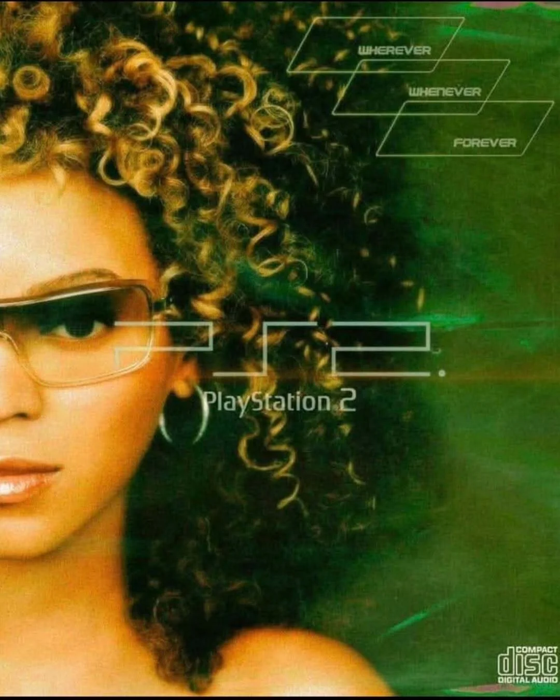

Ele voltou...

Robô controlado por sistema de IA afirma ser reincarnação de Michael Jackson.

Robô controlado por sistema de IA afirma ser reincarnação de Michael Jackson.

Jovem cria site para reunir estudantes e inventores a fim de reciclar lixo eletrônico.
Saiba mais
O PlayStation 2 é o console mais vendido da história, com mais de 160 milhões de unidades.
O WinRAR foi lançado em 1995. Naquela época, a internet era completamente diferente e a capacidade dos discos rígidos era muito menor do que hoje. A compressão de arquivos, portanto, desempenhava um papel muito mais importante do que hoje.
Mateus Camargo Pinheiro começou a estudar na UPF em 2026.